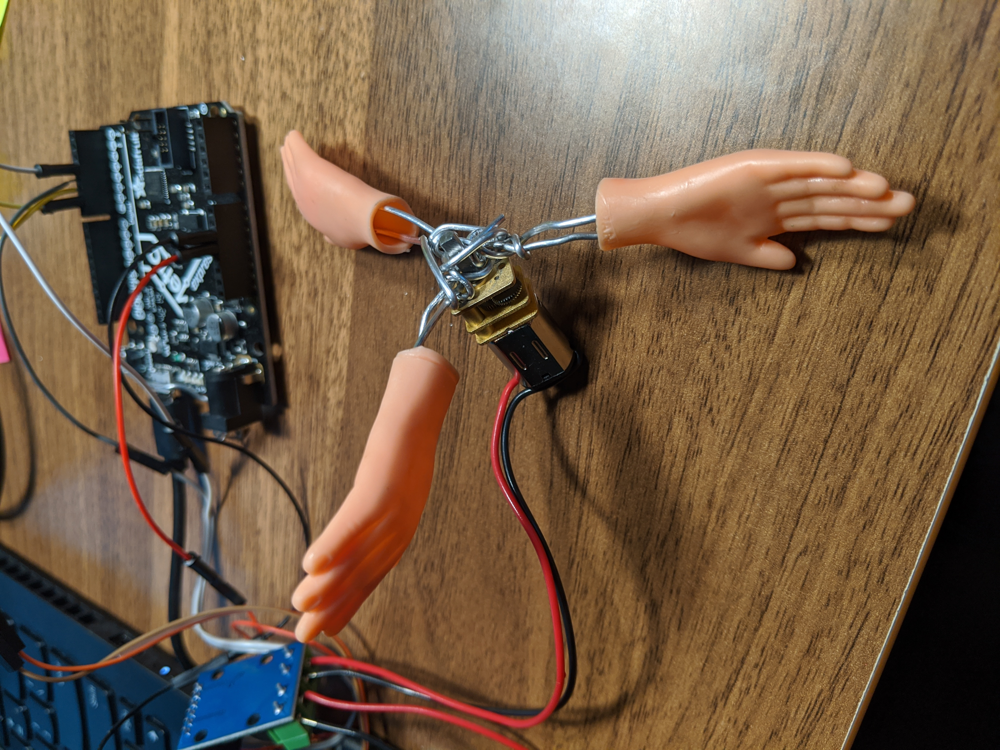
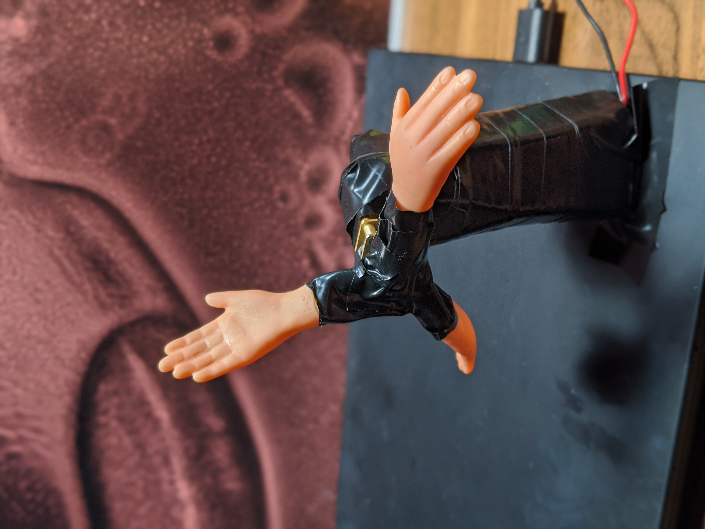

I was inspired and amused by the tiny plastic hands I keep finding around my studio and decided to implement them for my kinetic sculpture. Using a Polou 6V brushed DC micromotor and a potentiometer with my Adafruit Metro board, I created the High Five Mill for all of one's needs for validation. First, I got a hand-le on my circuit using one hand on the motor and another on the potentiometer knob (just for fun). I used this dog statue to assess how well I could pet a target.
Here's the associated Arduino program for this motor circuit.
Then, I used flexible aluminum wire to create spokes for the hands, which then would be attached to the motor in the center. I created a structural foundtion for the windmill-like sculpture with some cardboard, fed the motor wires through the tube, and then covered everything in electrical tape for a smoother appearance.
